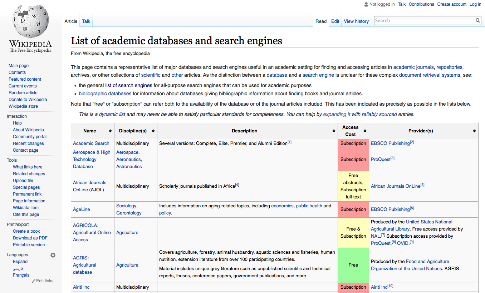
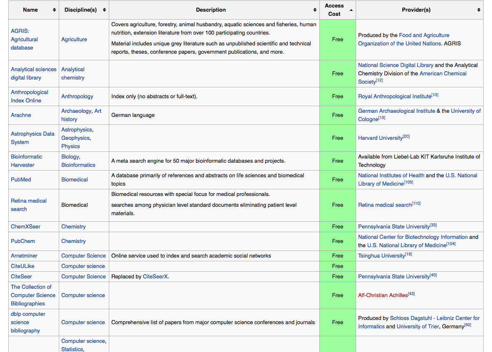
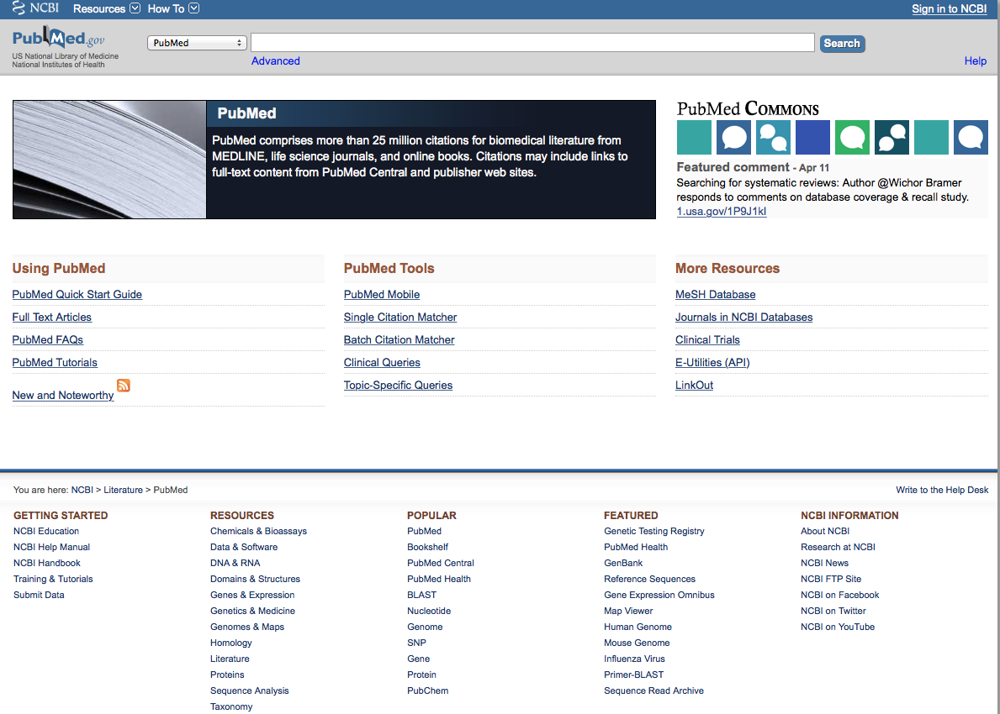

Recorrido A
Actividades
- Conocer la base de datos elegida.
- Da click en el siguiente vínculo y revisa la lista de bases de datos que Wikipedia provee:
Lista de bases de datos y motores de búsqueda - Desde tu Google Drive, abre un documento y titúlalo APELLIDO.S9
- Elige una base de datos de la lista de Wikipedia.
- Escribe el nombre de la base de datos que visitarás en esta sesión y la disciplina(s) con la que se relaciona.
- Identificar sus componentes principales y el tipo de información que contiene.
- Identificar los métodos de búsqueda idóneos para este sitio.
- ¿A qué tipo de usuarios está dirigida?
- ¿Qué operadores y/o signos recibe para la estrategia de búsqueda?
- ¿Cómo está organizada la información? ¿En áreas? ¿Cuáles son?
- ¿Qué recursos provee para refinar las búsquedas?
- ¿Qué lenguas usa?
- Realiza una búsqueda relacionada con el tema de interés que definiste en la sesión 7.
- Escribe los datos de la publicación elegida por su pertinencia y calidad.
- Describe brevemente cómo realizaste la búsqueda y si hubo algún inconveniente. (3 a 5 líneas)
- ¿Volverías a usar esta base de datos? ¿Por qué? ¿En qué ocasiones?
- Elaborar un mapa que describa a grandes rasgos esta base de datos.
- Elabora un mapa mental o un cuadro sinóptico para describir en forma gráfica la organización y acceso a esta base de datos, así como su potencial utilidad para tus búsquedas. Comparte en el Foro y con las profesoras del Taller.
Se abrirá una ventana como la que sigue:
La tabla que provee Wikipedia ofrece la ventaja de ordenar en forma que se adecue mejor a tus necesidades de información. De inicio, la tabla está ordenada alfabéticamente por el nombre de cada base de datos, pero puedes cambiar eso a tu preferencia, por ejemplo: da click en las flechas que aparecen junto a la palabra 'Discipline(s)', eso re-ordenará todas las bases de datos conforme a su disciplina(s) en orden alfabético. Si lo que buscas es que sean gratuitas, da click en las flechas junto a 'Access Cost' y obtendrás una ventana como la que sigue:
Aparecen al principio las bases gratuitas marcadas con verde, después las que requieren registro en amarillo, finalmente las que demandan un pago de suscripción en rojo.
Actividad 9.1
Actividad 9.2 Entra a la base de datos que elegiste y contesta las siguientes preguntas:
Actividad 9.3
Actividad 9.4
Recorrido B
Actividades
- Conocer la base de datos elegida.
- Identificar sus componentes principales y el tipo de información que contiene.
- En la esquina superior izquierda, encontrarás las letras 'NCBI', da click sobre ellas.
- Se abrirá una ventana hacia el 'National Center for Biotechnology Information' (Centro Nacional de Información sobre Biotecnología). Como puedes ver, hay 6 actividades principales que se realizan desde allí:
- Enviar manuscritos para dictamen y publicación
- Bajar datos desde NCBI a tu equipo
- Encontrar tutoriales y manuales para usar NCBI
- Usar las API y el código de NCBI para crear tus propias aplicaciones
- Usar las herramientas de NCBI para analizar los datos de estudios que estés realizando
- Conocer las investigaciones que se están realizando en NCBI, especialmente las de tipo colaborativo (posiblemente puedas participar en alguna de ellas).
- En la columna izquierda, encuentras todos los recursos que NCBI provee para el estudiante, para el especialista y para el investigador en el área.En la columna derecha, otros recursos en línea vinculados con PubMed y a los que puedes acceder desde la liga que allí se da.
- En la parte inferior de la columna de la derecha, encuentras las notificaciones sobre avances en las investigaciones que se realizan en NCBI y otras.
- Junto a las letras NCBI, aparecen las listas para todos los recursos (botón 'Resources') y el menú de todos los tutoriales y manuales que PubMed pone a disposición del usuario.
- Da click en el área que dice 'PubMed Commons', se abrirá la siguiente ventana:
- Regresemos a la primera pantalla.
- Da click en la flecha donde dice 'PubMed', se desplegará el menú con los nombres de todas las áreas en que se organizan los recursos y la información en PubMed.
- Identificar los métodos de búsqueda idóneos para este sitio.
- En la ventana de la pantalla de inicio, tecleamos 'human genome'.
- En el menú 'PubMed', seleccionamos 'Epigenomics' y damos click en el botón 'Search'.
- Obtenemos la pantalla que sigue:
- La columna a la izquierda muestra 3 filtros y la posibilidad de abrir otros. Observa los filtros que se activaron en este ejemplo:
- Realiza una búsqueda en PubMed desde la ventana de inicio.
- Usa los filtros que más convengan para refinar tu búsqueda.
- Modifica la estrategia desde la ventana que se muestra a la derecha hasta recuperar la información que requieres. Recuerda que seguimos trabajando con el tema que definiste en la sesión 7.
- Cuando obtengas los resultados que satisfagan al menos parcialmente tu necesidad de información, copia la estrategia de búsqueda y pégala en el documento.
- Copia los datos de los 2 resultados que sean más pertinentes a tu necesidad de información.
- Relata tu experiencia en PubMed (3 a 5 líneas).
- Elaborar un mapa que describa a grandes rasgos esta base de datos.
- Elabora un mapa mental o un cuadro sinóptico para describir en forma gráfica la organización y acceso a esta base de datos, así como su potencial utilidad para tus búsquedas. Comparte en el Foro y con las profesoras del Taller.
En esta ocasión vamos a visitar el metabuscador PubMed. Allí encontramos acceso a miles de textos sobre Medicina, Biomédica y otras disciplinas relacionadas con las Ciencias de la Vida. Este metabuscador da acceso a docenas de bases de datos especializadas en el área. Además contiene diarios científicos y libros en línea, además de artículos, reportes de investigación, y publicaciones derivadas de eventos internacionales. PubMed es una de las bases de datos más frecuentadas por médicos, genetistas, e investigadores del área.
Da click en el vínculo para acceder a PubMed
Se abrirá una ventana como esta:
Vamos a iniciar el recorrido por la parte superior de la pantalla de entrada.
Regresemos a la pantalla anterior.
Este es el chat donde puedes interactuar con científicos de todos el mundo acerca de sus temas de investigación.
Ahora vamos a iniciar la búsqueda de información. Veamos un ejemplo.
En este ejemplo recuperamos 1,615 resultados. Ahora refinaremos la búsqueda.
Al refinar la búsqueda con estos 3 filtros, reducimos a 101 resultados. Podemos seguir refinando o guardar la búsqueda. Estoy último se hace al dar click en 'Save Search', justo abajo de la ventana de búsqueda.
Es interesante notar que en la columna de la derecha, aparece la estrategia de búsqueda que generamos al dar los pasos descritos en este ejemplo. Podemos modificar, refinar y hasta cambiar la estrategia directamente en ese espacio titulado 'Search details' y luego dar click en el botón 'Search'.
Actividad 9.1, Desde tu Google Drive, crea un documento y titúlalo APELLIDO.S9
Actividad 9.2